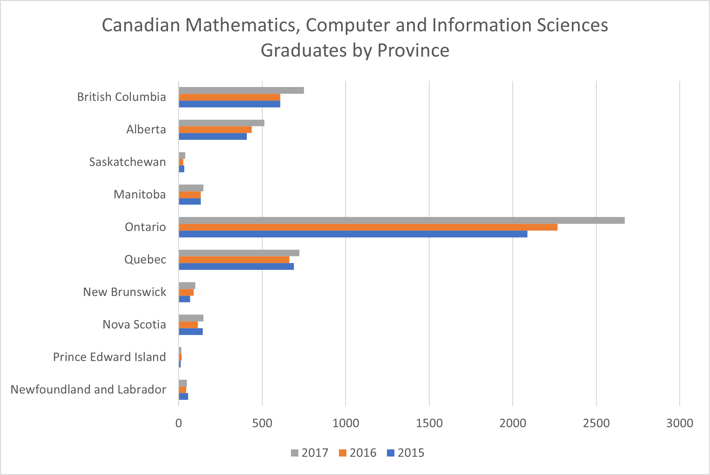

Statistical Data Analysis of Postsecondary Graduates from Canadian Universities
Harman Khehara
Canadian Graduates, Field of Study: Agriculture, Natural Resources, and Conservation
The average number of Canadian graudates in the field of agriculture, natural
resources and conservation have
increased each year, specifically there has been a 2.8% change from 2015 to 2016 and a 6.32% change from 2016 to
2017. Out of all regions
in Canada, the middle 50% of the number of graduates lie between 85 to 317 graduates each year; both the low and
high
values of this range are greater than both the years 2015 and 2016 demonstrating the increase in graduates from
2015 to 2017. The province of Quebec has seen a significant increase in number of graduates in 2017 when
compared to both the years
2016 and 2017. The most number of graduates in this field come from Ontario and a low number of graduates are
observed from Prince
Edward Island and Newfoundland and Labrador.
International Graduates, Field of Study: Agriculture, Natural Resources, and
Conservation
The average number of International graudates in the field of agriculture, natural
resources and conservation have
increased each year, specifically there has been a 12.8% change from 2015 to 2016 and a 6.8% change from 2016 to
2017. Out of all regions
in Canada, the middle 50% of the number of graduates lie between 15 to 60 graduates in 2017; the low value of 15
graduates is about 8 graduates
less compared to 2015 and high value of 60 graduates is about 5 graduates greater than 2015, but 6 graduates
lower than 2016, demonstrating
a variablity in the change of number of graduates from 2015 to 2017.
Provinces such as British Columbia, Manitoba and Ontario have seen significant growth in the number of graduates
from 2015 to 2017 while Quebec
and Alberta have seen a decrease in graduates from 2015 to 2017. A very low number of graduates are observed
from New Brunswick, Prince Edward Island and
Newfoundland and Labrador.
Canadian Graduates, Field of Study: Mathematics, Computer and Information Sciences

The average number of Canadian graudates in the field of mathematics, computer and
information sciences have
increased each year, specifically there has been a 3.82% change from 2015 to 2016 and a 16.96% change from 2016
to 2017. Out of all regions
in Canada, the middle 50% of the number of graduates lie between 61 to 671 graduates in 2017; both the low and
high
values of this range are greater than both the years 2015 and 2016 demonstrating the increase in graduates from
2015 to 2017.
Provinces such as British Columbia, Alberta and Ontario have seen significant growth in the number of graduates
from 2015 to 2017.
A very low number of graduates are observed from Prince Edward Island.
Inernational Graduates, Field of Study: Mathematics, Computer and Information Sciences
The average number of International graudates in the field of mathematics, computer
and information sciences have
increased each year, specifically there has been a 31.96% change from 2015 to 2016 and a 21.5% change from 2016
to 2017. Out of all regions
in Canada, the middle 50% of the number of graduates lie between 11 to 141 graduates in 2017; the low value of
11 graduates is about 4 graduates
less compared to 2016 and high value of 141 graduates is about 62 graduates greater than 2015, demonstrating
a variablity in the change of number of graduates from 2015 to 2017.
Provinces such as British Columbia, Alberta Ontario and Quebec have seen significant growth in the number of
graduates from 2015 to 2017.
A very low number of graduates are observed from Saskatchewan, Prince Edward Island and
Newfoundland and Labrador.
Canadian Graduates, Field of Study: Architecture, Engineering and Related Technologies
The average number of Canadian graudates in the field of architecture, engineering
and related technologies have
have seen a 15.1% change from 2015 to 2016 and a -4.41% change from 2016 to 2017, showing a decrease in
graduates
from 2016-2017. Out of all regions
in Canada, the middle 50% of the number of graduates lie between 298 to 1300 graduates in 2017; the low value of
298 graduates is about 11 graduates
less compared to 2016 and high value of 1300 graduates is about 47 graduates greater than 2016, demonstrating
a variablity in the change of number of graduates from 2015 to 2017.
Ontario has seen significant growth in the number of graduates from 2015 to 2017, a very low number of graduates
are observed from Prince Edward Island,
and the remaining locations did not observe a large change in the number of graduates from 2015 to 2017.
International Graduates, Field of Study: Architecture, Engineering and Related
Technologies
The average number of International graudates in the field of architecture,
engineering and related technologies have
increased each year, specifically there has been a 4.35% change from 2015 to 2016 and a 17.5% change from 2016
to 2017. Out of all regions
in Canada, the middle 50% of the number of graduates lie between 75 to 279 graduates in 2017; both the low and
high
values of this range are greater than both the years 2015 and 2016 demonstrating the increase in graduates from
2015 to 2017.
Provinces such as British Columbia, Ontario and Quebec have seen significant growth in the number of graduates
from 2015 to 2017, while
New Brunswick has seen a decline in the number of graduates from 2016 to 2017.
A very low number of graduates are observed from Prince Edward Island.